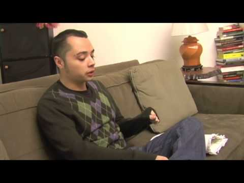
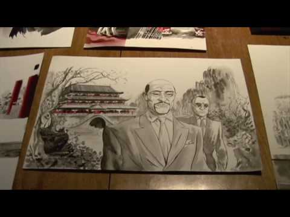
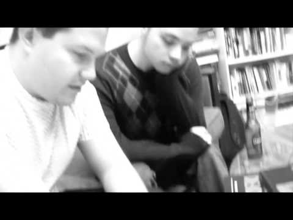

Watch

Play video: Introducing Michael DeWeese
Play video: Overview of Mike's Process
Play video: Storyboarding Traverse Flies
Play video: Introducing Michael DeWeese
Play video: Overview of Mike's Process
Play video: Storyboarding Traverse Flies